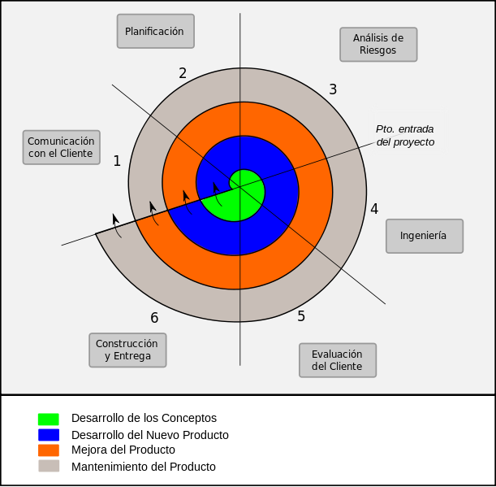
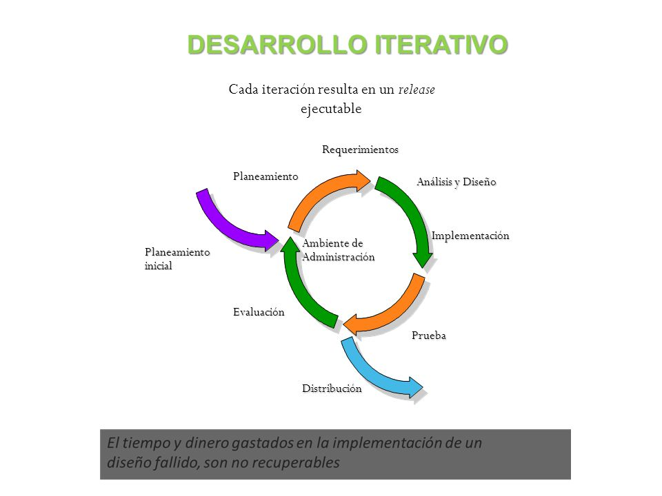

Modelos de desarrollo de software
Modelo de cascada
Es un modelo el cual se desarrolla de forma secuencial y esta constituido por unas etapas que se ejecutan una tras otra. Su nombre se denomina asi ya que como sus fases van una sobre otra entonces se hace parecer a una cascada y siguiendo una ejecucion de arriba a abajo como una cascada asi mismo el modelo es un poco riguroso en su desarrollo ya que si no se ha culminado la etapa anterior, no permite poder continuar con la siguiente etapa, asi mismo tambien se le conoce al modelo de cascada como lineal secuencial.
Modelo de espiral
Este software a diferencia del modelo en cascada, puede ser una solución para este modelo ya que, este modelo describe de alguna manera el ciclo del vida del software por medo de espirales que se van repitiendo hasta llegar al producto final, eso quiere decir que cada que se hace una iteración al modelo el software quedara un poco mas completo y saldra una nueva versión. Este modelo se conoce como modelo incremental. Este modelo minimiza los riesgos del software lo que significaria un aumento en los costes totales, mas esfuerxo y un azamientos mas lento. Las iteraciones contrarrestan lo anterior mencionado ya que primero se hacen protoripos y estos deben pasar al menos una vez por las fases del desarrollo de software.

Desarrollo Iterativo e incremental
Es un modelo creado en respuesta a las debilidades del modelo tradicional que es el modelo en cascada. Es uno de los modelos mas utilizados y consiste en un cnojunto de actividades pequeñas y las cuales son repetitivas. Este modelo se relaciona con muchas estrategias de desarrollo de software y por eso es empleado en diversas metodologias. El modelo consta de diversas etapas de desarrollo en cada incremento, las cuales inician con el análisis y finalizan con la instauración y aprobación del sistema.2

Desarrollo ágil.
Este desarrollo es un enfoque para la toma de desiciones en los proyectos. Este se refiere a metodos de ingenieria del software basados en los modelos de la lectura 4 donde los requisitos se solucionan con el pasar del tiempo. Asi el trabajo se realiza por equipos creados por cualquier persona y multidisciplinarias, inmersos en un proceso de ayuda. Asi como el modelo en espiral este esta compuesto por iteraciones en las cuales van las siguientes etapas que se le llama cilo de vida: planificación, análisis de requisitos, diseño, codificación, pruebas y documentación. El objetivo de cada iteración no es agregar toda la funcionalidad para justificar el lanzamiento del producto al mercado, sino incrementar el valor por medio de "software que funciona" (sin errores). Los métodos ágiles enfatizan las comunicaciones cara a cara en vez de la documentación. La mayoría de los equipos ágiles están localizados en una simple oficina abierta, a veces llamadas "plataformas de lanzamiento". La oficina debe incluir revisores, escritores de documentación y ayuda, diseñadores de iteración y directores de proyecto. Los métodos ágiles también enfatizan que el software funcional es la primera medida del progreso. Combinado con la preferencia por las comunicaciones cara a cara, generalmente los métodos ágiles son criticados y tratados como "indisciplinados" por la falta de documentación técnica.
Orientado a la reutilización.
Es un proceso de creacion de un software el cual ya se encuentra construido y sobre este se empezara a trabajar para asi mismo poder reutilizar codigo, es decir que no se debe iniciar desde un principio con los requerimientos como los modelos anteriores, lo que se busca con este modelo de reutilizacion principalmente es reutilizar (valga la redundancia) el codigo para asi poder tener un sotware mas rapido, eso quiere decir que es uno de los modelos en los cuales se puede utilizar si se posee una versión de un software y se desea modificar o es un poco absoleto y se quiere sacar una version mas actualizada.